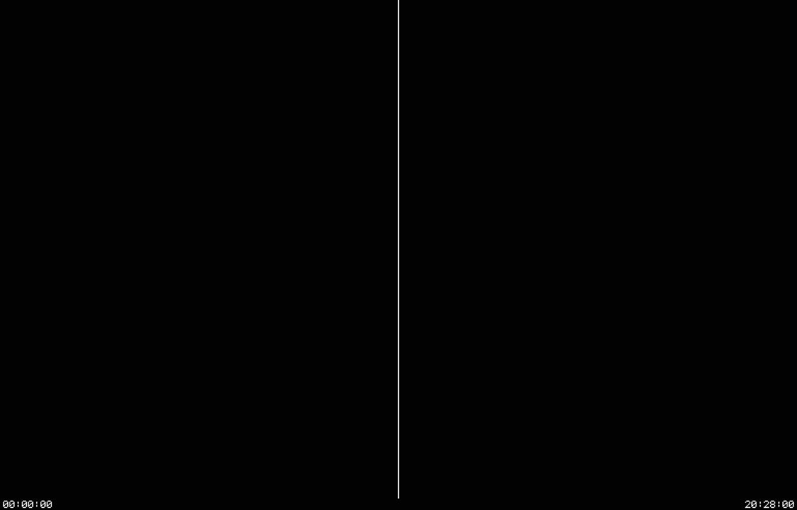

01 — MICROTHE FAST ONE
60 M/s
about 9x the machine
What each microcycle does, and nothing about when. The quickest way to boot the system and use it.
--microMUIR-SIM / THE MIT CADR LISP MACHINE, SIMULATED IN SOFTWARE
Around 1978, MIT built a computer to run Lisp: the CADR Lisp Machine.
muir-sim simulates it on your own computer, from MIT’s drawings of its boards. It models QUUX, the CADR evolved, beside it, as two executables: cadr, MIT’s machine as built, and quux.
01 / A LISP MACHINE
A screen, a keyboard, a mouse and a network.
And the system on it all written in Lisp.
The CADR is a computer built at the MIT AI Lab to run Lisp. It was one person’s workstation: a screen, a keyboard, a mouse and a network, and the system on it — the windows, the editor, the network code — was all written in Lisp.
Tom Knight, David Moon, Jack Holloway and Guy Steele drew it in about 1978. MIT built about thirty of them, and the first Lisp machines LMI and Symbolics sold were built on it.
muir-sim runs the CADR’s software by simulating its hardware, not by reimplementing Lisp, and boots System 100, the last release of the Lisp Machine software MIT made, restored from tapes the MIT Tapes of Tech Square project recovered. muir-sim is written in Rust and has no crate dependencies.
02 / WHAT MUIR-SIM DOES
muir-sim has no Lisp of its own. It simulates the machine, from MIT’s own drawings of its boards, and MIT’s software runs on it unchanged: the microcode, the Lisp system, and MIT’s debugger for the machine.
The CADR’s processor carries out each instruction as a series of small steps, written in microcode; one step is a microcycle, and the real machine did about 6.9 million of them a second. muir-sim simulates it at three levels of detail, and all three agree at the end of every microcycle, so the fast ones can be checked against the slow one. QUUX runs on micro and rtl; chip is the CADR’s alone.
about 9x the machine
What each microcycle does, and nothing about when. The quickest way to boot the system and use it.
--microabout 2x the machine, flat out
What each microcycle does and when: waits on the buses, timeouts, the debug cable. It could run twice the machine’s speed, but by default it is held to the machine’s own, so the machine’s clock keeps the day’s time; --no-pace lets it run flat out.
--rtlabout 1/5,000 of the machine
MIT’s drawings of every board, simulated part by part and wire by wire. Far too slow to use, and the reference the other two are checked against.
--chipThe worst case, with everything fitted: the color TV on every engine, and on chip MIT’s disk controller with its multiplexor as well, every board a netlist. Rates are flat out, with no pacing, from cargo run --release --example benchmark -- --everything on one core of an Apple M4, rounded down; without the second display board chip runs about 2,000/s and the other two the same. The machine’s own microcycle is 145 ns, so the hardware runs 6.9 M of them a second. What each engine computes on the way to the next one is in the manual.
03 / BUILD AND BOOT
No binaries are distributed; you build it yourself. A fresh clone needs nothing else — there are no crate dependencies.
Install rustup first and open a new shell so cargo is on the path; the compiler version is pinned in the repository.
curl --proto '=https' --tlsv1.2 -sSf https://sh.rustup.rs | shInstall rustup, then open a new shell so cargo is on the path.
git clone https://github.com/metebalci/muir
cd muir
cargo build --releaseThat builds cadr and quux. cargo test beside it is optional, and a fresh clone passes with nothing fetched.
tools/fetch-system-100.shA disk pack, a file that stands in for the machine’s disk and holds its microcode and a band, the saved Lisp world it boots into; and the system’s sources. Neither is part of muir-sim: the script fetches them and checks every file against its SHA-256 sum.
target/release/cadr --disk-pack vendor/run/disk-sys-100-0.img \
--chaos-address 3050 --chaos-udp 42043 --chaos-udp-peer 3060@127.0.0.1:42042The everyday engine, rtl, booting the pack. The Chaosnet is the machine’s network, and this band expects to be machine 3050 on it and to ask host 3060 for the date and for its files. It prints where its screen is: point any VNC viewer there.
The file and time host at 3060 is not the CADR. A CADR had no such server in it, so it is a program of its own on the network — ozd. A band that reaches no host boots all the same, but stops to ask for the date: Super-B at the debugger, then the date and time it asks for and y, finish it.
quux runs QUUX, with its own boot PROM, MONO TV and block-disk. It needs muir-sys’s microcode 1000 and System 1002 on a VHD with a GPT partition table: MIT’s own will not run on it. System 1002 is in progress and not released yet; muir-sys says how it is built.
target/release/quux --disk-pack <a System 1002 VHD>04 / MAKING A PACK
The fetched pack is not the only one. diskpack, built beside cadr and quux, makes a pack of your own and edits its label: partitions added, grown, zeroed and deleted, microcode and bands loaded and dumped. This makes one with microcode 323 and the System 100 band, the fetched pack’s LOD2, to boot with --disk-pack mine.img:
target/release/diskpack mine.img initialize
target/release/diskpack mine.img load MCR1
target/release/diskpack mine.img load-from LOD1 vendor/run/disk-sys-100-0.img LOD205 / INSIDE THE MACHINE
For the curious: the CADR is a set of boards on two buses, and this is how muir-sim puts them together. Every box is a board, simulated from MIT’s drawings on chip and as a model of the board on the other two engines.
The specification, as muir-sim models it:
PROCESSOR 32-bit, microcoded CONTROL 48 bits x 16K words CYCLE 145 ns BUSES Xbus and Unibus BUILT about 30
06 / SEVEN NETLISTS
Each board as a netlist: every chip on it and every wire between them, read out of MIT’s own CAD files. These are what the chip engine simulates.
Parts in a whole machine — one memory board on the Xbus and both display boards, the SIMPLE TV and the color TV, and 7,224 with all thirty-two memory boards.
Not drawn by hand. Pulled out of MIT’s own CAD files, then held pin for pin to MIT’s wire list for the same board.
Where the netlists come from ↗| NETLIST | BOARD | PARTS |
|---|---|---|
| CADR.netlist | Processor and control store, two boards in the one file | 985 |
| BUSINT.netlist | Bus interface | 176 |
| CADRM.netlist | Main memory, 64K words a board, 32 on the Xbus for 2M words | 168 |
| CADRIO.netlist | I/O board: keyboard, mouse, clocks, the serial port, and the Chaosnet interface, which is the other half of the same board | 173 |
| CADRDC.netlist | Disk controller | 171 |
| SIMPLETV.netlist | The standard black-and-white TV, which is MIT’s word for the screen | 171 |
| LISPMTV.netlist | The LISPM TV in its four-bit build, which replaced the SIMPLE TV in December 1980; strapped to the color address it is the color TV as well. The eight-bit build is not built | 172 |
And the eighth, the disk multiplexor’s, which is fitted only when a run asks for it: the netlists.
Every board a netlist at once, and System 100 cold-booted through them — twice. Each run is more than 60 hours of gate-level simulation: 2 days 14 hours and 301 million microcycles on 12 September 2026, and 2 days 21 hours and 306 million with the disk multiplexor fitted as well on 15 September 2026. The machine’s own report at the end of each, printed in its who-line, was Cold-booted. Both runs are in the manual.
07 / THE ACCEPTANCE TEST
A real CADR could be debugged from another CADR. A cable joined the two machines’ bus interfaces, and a program on one could stop the other, step it and read out its insides, even when its own software had crashed. That program is CC, MIT’s console debugger for the machine.
muir-sim’s acceptance test is exactly that. Two simulated machines are joined by the simulated debug cable. The first boots System 100, logs in and loads CC over the network; CC then halts the second machine and reads back where it had got to. It passes only if the processor, memory, disk, network, file loading and both ends of the debug cable all behave as MIT built them.
The recording at its own size ↗
The acceptance test, recorded as it ran: CC on the left machine seizes the right one through the debug cable, and the right screen goes still at that instant and never moves again.
08 / ABOUT
The CADR, the drawings, the wire lists, the microcode and the diagnostics are MIT’s, recovered by other people’s work over decades; the manual lists every source and what each contributed.
muir-sim is implemented entirely by Claude Code, on Anthropic’s Opus and Fable models. It is written in Rust and has no crate dependencies.
muir is named for Nathan Muir, the character Robert Redford plays in Spy Game (2001). In memory of Robert Redford.
© 2026 Mete Balci. muir-sim is AGPL-3.0-or-later. MIT’s own drawings and wire lists are committed unmodified in mit/.